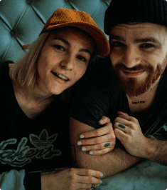

A human–centered definition of success.
Our approach is shaped by the perspective and experience of people impacted by the justice system. Together, we are focused on restoring equity and supporting success in the community.


Criminal justice leaders use Recidiviz to get a real-time picture of their system, diagnose issues, and drive meaningful changes.
Trusted in:
intake an agency’s disjointed data
deploy tools for all levels of decision making
improve outcomes for justice-impacted individuals
A human–centered definition of success.
Our approach is shaped by the perspective and experience of people impacted by the justice system. Together, we are focused on restoring equity and supporting success in the community.
The criminal justice system can't support safe, whole communities without feedback on what’s working and what’s not. We stitch together data from fragmented systems to provide decision-makers with the information they need to improve outcomes. With this data, we surface opportunities to safely chart a path to a smaller system, and to track the impact of policy and practice changes over time.

Get the right information to the right person at the right time.
Set goals, forecast the impact of policy or practice changes, and track their outcomes across your agency.
Track probation and parole outcomes, see what’s leading to success, and reduce recidivism with our case management system.
Use open source code, public data, interactive tools, and data visualizations to understand the state of incarceration, promote accountability, and conduct research.
Project the impact of policies on carceral, fiscal, and community outcomes. Understand where disparities begin, where they grow, and whether a policy is likely to increase or reduce them.
Recidiviz in the Press

ted talks
2.22.22
Meet the 2022 class of TED Fellows

ted talks
2.22.22
New Partnership Aims to Help Transform Prison Conditions

ted talks
2.22.22
Justice Department Establishes Initiative to Strengthen States’ Use of Criminal Justice

ted talks
2.22.22
The 2021 Good Tech Awards

ted talks
2.22.22
Maine DOC to better harness correctional data to improve outcomes

ted talks
2.22.22
Together, We Can Make Mississippi Safer and Reentry-Ready
Where we work
We're expanding. Get in touch and start turning your data into action.